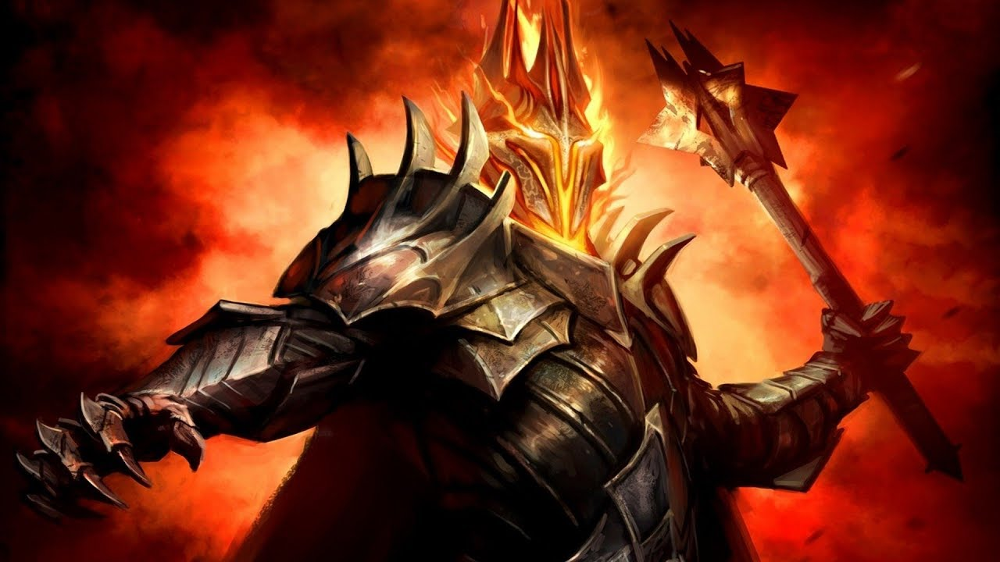

About Sauron
Sauron Gorthaur is a fictional character from Middle World of Tolkien mythology. Sauron is a Maiar and a second Dark Lord who was initially Melkor's assistant, but later after the defeat of Melkor continued his reign as a second dark lord. He created the One Ring and settled in Mordor. By commanding Mordor, Sauron violated the Valar law that the maiar should not rule any kingdom. In the war for the ring, he subjugated Saruman, who was initially one of Melkor's commanders.
Sauron under Mount Doom
Saurons Motives
- Joined Melkor because he wanted order
- Thought that the valar could not bring order
- Forged the rings so he could control middle earth
- Wanted to control everybody
Saurons Servants
During his life he had some very powerfull servants. Click on the names to read more about them: